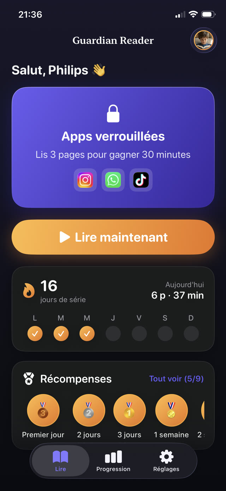
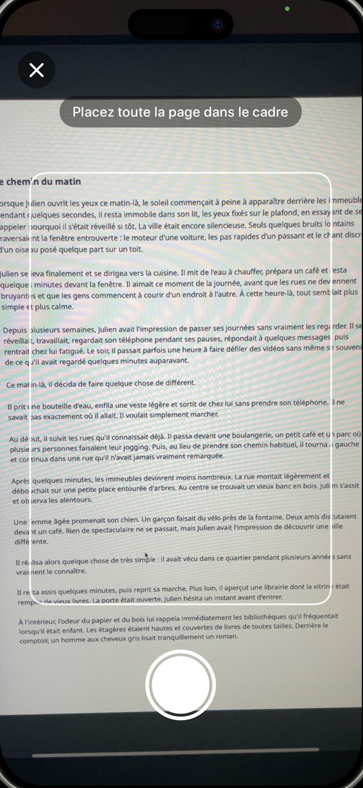
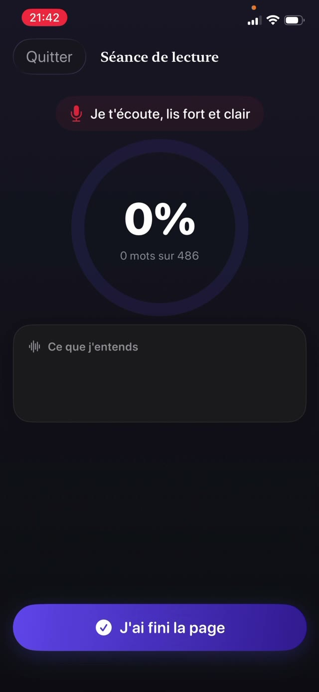
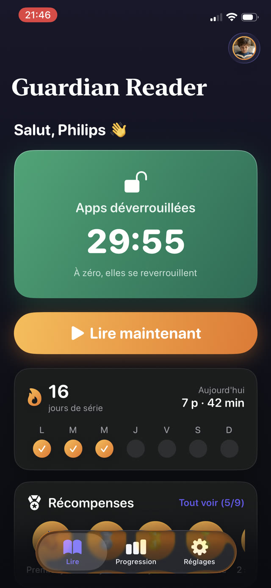
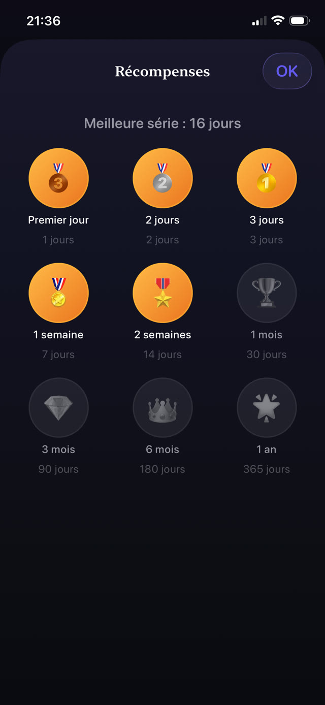

Le contrôle parental qui écoute votre enfant lire.
Guardian Reader verrouille les apps que vous choisissez. Votre enfant lit un vrai livre à voix haute, l'iPhone vérifie chaque mot, et le temps d'écran gagné se débloque. Aucune volonté requise, ni la sienne ni la vôtre.
Gratuit · Pour l'iPhone de l'enfant, iOS 18+ · Sans compte, sans suivi · 9 langues


Lire pour jouer.
Guardian Reader place un vrai livre entre votre enfant et ses apps. Quelques pages lues à voix haute, vérifiées mot par mot, et l'écran s'ouvre.
iPhone · iOS 18+ · Gratuit : lecture vérifiée + une app verrouillée · Premium avec 7 jours d'essai
Dans l'app
Verrouillez les apps jusqu'à ce que la lecture soit faite.
Un contrôle parental et un coach de lecture en un. Votre enfant s'en sert seul ; c'est l'iPhone qui vérifie.
Vérification en direct
Regardez-la vérifier, mot par mot.
Pendant que votre enfant lit à voix haute, l'app compare ce qu'elle entend aux pages scannées et le pourcentage monte en direct. Ceci est une séance réelle, un livre papier lu à un iPhone. Une vraie lecture dépasse largement le seuil ; parler d'autre chose tombe près de zéro.
Lire à voix haute, c'est l'exercice →
Scannez les pages
N'importe quel livre papier devient la clé.
Votre enfant photographie chaque page qu'il va lire, une photo par page, puis les lit toutes d'une traite comme un vrai livre. Seul le texte à l'intérieur du cadre compte, et une page déjà scannée dans la séance est refusée automatiquement.
Comment donner envie de lire à vos enfants →
Anti-triche
Elle repère les raccourcis que les enfants prennent vraiment.
Pas de quiz à deviner, pas de système d'honneur. Les mots prononcés sont comparés aux pages exactes qu'il a scannées, dans l'ordre : survoler, improviser ou affirmer que c'est fait ne passe pas. Les hésitations et les petites erreurs, si : elle vérifie qu'il a lu, pas qu'il a été parfait. Un curseur règle la sévérité du seuil.
Comment fonctionne le temps d'écran gagné →
La récompense
Lecture validée. Téléphone déverrouillé.
Les apps s'ouvrent exactement pour les minutes gagnées, avec un décompte bien visible. À zéro, elles se reverrouillent toutes seules, imposées par le système Temps d'écran d'Apple, même si Guardian Reader est fermée.
Comment limiter YouTube et TikTok →
Règles des parents
C'est vous qui fixez le taux de change.
Des pages en entrée, des minutes en sortie : une page vaut environ 15 minutes entre 4 et 6 ans, jusqu'à quatre pages pour environ 45 minutes chez les ados. Le plan propose un point de départ selon l'âge, et chaque chiffre se modifie derrière un code parental distinct de celui du téléphone.
Des règles de temps d'écran qui tiennent →
Progression et séries
Des médailles qui les font revenir.
Séries, étoiles et médailles pour l'enfant ; pages par jour, par mois et par an pour vous. Premium ajoute un rapport PDF de chaque séance : date, minutes, pourcentage et le texte réellement lu, prêt à remettre à l'enseignant.
Un carnet de lecture pour l'école →
Privée par conception
Un micro braqué sur un enfant se doit de s'expliquer.
L'appareil photo lit la page, le micro transcrit la lecture, et les deux ne travaillent que sur l'appareil. Aucun compte, aucun serveur, aucune analyse, aucun SDK tiers : la voix ne quitte jamais l'iPhone, et tout fonctionne hors ligne.
Lire la politique de confidentialité →How it works
Quatre étapes. Rien à négocier.
Réglez-la une fois avec votre enfant. Ensuite l'accord tourne tout seul : la limite vit dans l'app, pas dans votre voix.
Verrouillez les apps
Choisissez les apps ou des catégories entières à verrouiller, comme YouTube, TikTok ou les jeux, et protégez les réglages avec votre code parental.
Scannez les pages
Votre enfant photographie les pages du vrai livre qu'il s'apprête à lire, une photo par page.
Lisez à voix haute
Il lit tout d'une traite pendant que l'iPhone écoute et vérifie chaque mot face au texte scanné.
Le temps d'écran se débloque
Lecture validée, les apps s'ouvrent pour les minutes gagnées. À zéro, elles se reverrouillent seules.
Guides
De l'aide pour les moments difficiles.
Des guides pratiques sur le temps d'écran, le verrouillage des apps et l'envie de lire, et comment mettre Guardian Reader au travail sur chacun.
Comment donner envie de lire à vos enfants
Sept approches qui marchent avec un enfant qui préfère un écran, et celle qui ne demande aucune volonté de votre part.
Lire le guide Temps d'écranComment un enfant peut gagner du temps d'écran en lisant
Faire du temps d'écran quelque chose qui se gagne au lieu de quelque chose qui est dû, et comment tenir la règle sans jouer au gendarme.
Lire le guide Contrôle parentalComment verrouiller des apps sur l'iPhone de votre enfant
Ce que Temps d'écran sait faire et ne sait pas faire, où les enfants trouvent les failles, et comment les fermer pour de bon.
Lire le guide YouTube · TikTokComment limiter YouTube et TikTok pour les enfants
Pourquoi les limites de temps seules échouent face aux fils infinis, et quoi mettre devant l'app à la place.
Lire le guide FluiditéTravailler la fluidité de lecture à la maison
Ce que les enseignants entendent par fluidité, pourquoi lire à voix haute est l'exercice, et comment caser dix minutes dans une soirée ordinaire.
Lire le guide Règles familialesDes règles de temps d'écran qui tiennent vraiment
Pourquoi la plupart des règles d'écran s'effondrent en deux semaines, et les trois propriétés communes à celles qui survivent.
Lire le guideFAQ
Vos questions, nos réponses.
Comment Guardian Reader vérifie-t-elle que mon enfant a vraiment lu le livre ?
Mon enfant peut-il tricher en faisant semblant de lire ?
Une voix générée par IA peut-elle lire la page à la place de mon enfant ?
J'installe Guardian Reader sur mon téléphone ou sur celui de mon enfant ?
Quelles apps puis-je verrouiller sur l'iPhone de mon enfant ?
Guardian Reader enregistre-t-elle la voix de mon enfant ?
Quels livres fonctionnent avec l'app ?
À quel âge s'adresse Guardian Reader ?
Combien coûte Guardian Reader ?
Puis-je obtenir un carnet de lecture pour l'école ?
Est-ce que ça marche sans Internet ?
Mon enfant peut-il simplement désinstaller l'app ou changer les réglages ?
Ce soir, on lit d'abord.
Deux minutes de réglage. Votre enfant lit à voix haute, gagne son temps d'écran, et vous n'êtes plus le méchant.
Télécharger dans l'App StoreGratuit · Sans publicité, sans compte, sans suivi